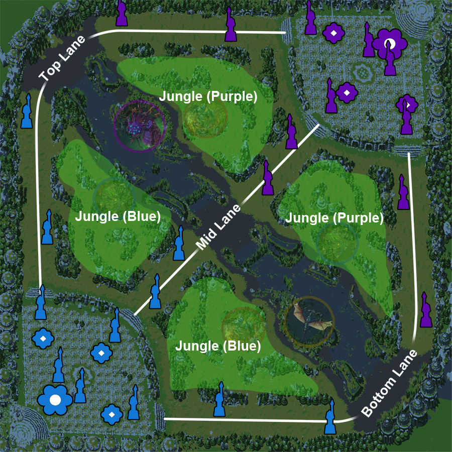

Visão Geral do Jogo
O que é League of Legends?
League of Legends (LoL) é um jogo MOBA (Multiplayer Online Battle Arena) onde duas equipes de 5 jogadores competem para destruir o Nexus inimigo.
Objetivo Principal
- Destruir torres inimigas
- Matar minions para ouro e experiência
- Trabalhar em equipe
- Destruir o Nexus inimigo

Sistema de Runas
Árvores de Runas
Precisão
Focada em dano sustentado e velocidade de ataque
Exemplos: Agilidade Mental, Lenda: EspontaneidadeDominação
Focada em burst e caça
Exemplos: Eletrocutar, Gosto de SangueFeitiçaria
Focada em habilidades e cooldown
Exemplos: Cometa Arcano, TranscendênciaDeterminação
Focada em defesa e sustentação
Exemplos: Resguardo, DemolirInspiração
Focada em utilitários únicos
Exemplos: Kleptopata, Calçado MágicoFeitiços de Invocador
Flash
Teleporta instantaneamente para uma curta distância. O feitiço mais importante do jogo!
Cooldown: 300sIgnite
Causa dano verdadeiro ao longo do tempo e reduz cura.
Cooldown: 180sHeal
Restaura vida sua e de um aliado próximo.
Cooldown: 240sTeleport
Teleporta para um aliado, estrutura ou tropas.
Cooldown: 360sBarrier
Cria um escudo temporário.
Cooldown: 180sExhaust
Reduz drasticamente o dano de um inimigo.
Cooldown: 210sTipos de Dano e Resistências
Dano Físico (AD)
Baseado em Attack Damage (AD). Resistido por Armadura.
- Ataques básicos da maioria dos campeões
- Habilidades de ADCs e alguns assassinos
- Itens de armadura reduzem este dano
Dano Mágico (AP)
Baseado em Ability Power (AP). Resistido por Resistência Mágica.
- Habilidades de magos
- Alguns ataques especiais
- Itens de RM reduzem este dano
Dano Verdadeiro
Não é resistido por nada. Sempre causa o valor total.
- Algumas habilidades especiais
- Ignite, Smite
- Não pode ser reduzido!
Classes de Campeões
Marksman (ADC)
Dano físico à distância. Principal fonte de dano da equipe.
Support
Protege e auxilia a equipe. Controla visão de mapa.
Mid Laner
Mago ou assassino. Controla o centro do mapa.
Top Laner
Tank ou lutador. Geralmente joga sozinho.
Jungler
Percorre a jungle. Ganka as lanes.
As Lanes do Mapa
Top Lane
Lane superior. Geralmente 1v1. Foco em farm e escala.
Jungle
Área entre as lanes. Monstros neutros e objetivos.
Mid Lane
Lane central. Lane mais curta. Fácil de gankar e ajudar outras lanes.
Bot Lane
Lane inferior. Duo lane (ADC + Support). Dragon próximo.
Minions e Gold
Tipos de Minions
- Melee Minions: 21-22 gold
- Caster Minions: 14-15 gold
- Cannon Minions: 60-90 gold (spawn a cada 3 waves)
- Super Minions: 25-40 gold (quando inibidor é destruído)
Importância do Gold
- Compra de itens
- Melhoria de habilidades
- Controle de objetivos
- Vantagem sobre inimigos
Last Hit
A técnica mais importante! Você só ganha gold se der o último hit no minion. Pratique no training mode!